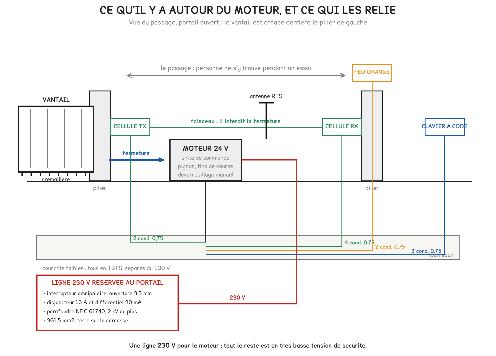

BTS FED option C · 1re année
Une ligne 230 V réservée, un moteur en très basse tension, quatre périphériques et trois sécurités. Ce que vous avez câblé, réglé et surtout essayé sur la motorisation de l'atelier. Ce travail pratique ne tient pas une semaine du calendrier : il se fait quand le portail est disponible.
1 outil · 6 questions · 4 exercices · 2 replis · 1 figure
Savoirs travaillés
Le poste porte une motorisation Somfy Elixo 500 3S, prévue pour les portails coulissants jusqu’à 500 kg. Vous avez câblé la ligne d’alimentation, quatre périphériques et les sécurités, puis mis l’ensemble en service.
La séance ne s’arrête pas à un portail qui bouge : elle s’arrête à un portail essayé.

230 V · ligne réservée · 1,5 mm² au minimum
La terre ne va pas au bornier : elle se raccorde sur la carcasse du moteur.
Le moteur, lui, est en 24 V. Tout ce qui sort de la carte vers les cellules, le feu, le clavier et la batterie est en très basse tension de sécurité.
Une seule ligne 230 V, réservée au portail, et rien d’autre dessus : ni éclairage de jardin, ni prise de service. C’est le manuel qui l’impose, et c’est ce qui permet de consigner le portail sans couper autre chose.
| La sécurité | Ce qu’elle surveille | Quand elle agit |
|---|---|---|
| Cellules photoélectriques | le passage libre | en fermeture seulement |
| Détection d’obstacle | l’effort du moteur | à l’ouverture et à la fermeture |
| Barre palpeuse | le contact en bout de vantail | en fermeture |
Les cellules ne protègent pas l’ouverture : le manuel prévoit que leur occultation n’a aucun effet pendant ce mouvement. Ce qui protège à l’ouverture, c’est la détection d’obstacle. Confondre les deux conduit à annoncer à un client une protection qui n’existe pas.
Pour aller plus loin
Les entrées de sécurité de la carte attendent un contact normalement fermé. Un fil qui se débranche, une cellule déréglée ou un récepteur qui perd son alimentation ouvrent le contact : le portail refuse alors de fermer.
C’est le principe de la sécurité positive. Une panne du dispositif de sécurité doit conduire au refus, jamais à une fermeture qui ne serait plus surveillée.
C’est aussi pourquoi le pont entre les bornes 19 et 20 est obligatoire lorsqu’aucune cellule n’est posée : sans lui, la carte lit une sécurité ouverte.
Poser le pont revient à déclarer qu’il n’y a pas de cellules. La fermeture automatique devient alors interdite : le manuel ne l’autorise que si une entrée de sécurité cellules est active.
Un portail qui se referme seul le fait sans que personne le surveille. C’est la raison de la règle, et c’est ce qu’il faut savoir répondre à un client qui demande les deux à la fois.
Pendant l’auto-apprentissage, la détection d’obstacle est inactive : le manuel l’écrit. C’est le moment où le passage doit être vide, et où la commande d’arrêt reste à portée de main.
| Code | Ce qu’il signale |
|---|---|
| C1 | attente de commande |
| C2 · C4 | ouverture en cours · fermeture en cours |
| C6 · C7 | détection sur les cellules · sur la barre palpeuse |
| C13 | auto-test d’un dispositif de sécurité en cours |
| H0 · H1 | attente de réglage · auto-apprentissage |
Pour aller plus loin
Sans auto-test, le manuel impose d’essayer les sécurités tous les six mois : c’est une ligne de la notice remise à l’exploitant, pas une recommandation.
Avec auto-test, la carte coupe puis rétablit l’alimentation des cellules à chaque mouvement et vérifie que le faisceau réagit. Si le test échoue, plus aucun mouvement n’est possible jusqu’au passage en mode homme mort.
L’auto-test suppose que le récepteur soit alimenté par la sortie pilotée, et non par l’alimentation permanente des accessoires. Le câblage décide donc de ce que la carte pourra vérifier.
Exercice · B8-2
Sur la carte, un feu orange de 24 V se raccorde sur deux bornes voisines de la sortie destinée à la signalisation.
Donner le numéro de la première de ces deux bornes.
Exercice · B10
La carte fournit 1,2 A pour l’ensemble des accessoires. Le poste comporte une paire de cellules qui consomme 24 mA, un clavier à code de 30 mA et un lecteur de badges de 55 mA.
Combien de milliampères restent disponibles ?
Exercice · C1-1
La ligne du portail est protégée par un disjoncteur de 16 A sous 230 V.
Quelle puissance apparente cette protection autorise-t-elle au maximum ?
Exercice · B8-2
Un client demande la fermeture automatique de son portail, mais refuse les cellules photoélectriques, qu’il trouve inesthétiques. Rédiger la réponse, en trois ou quatre lignes.
Les séances de sûreté reprendront ce même portail par l’autre bout : le clavier laissera la place à un lecteur de badges, et la question deviendra celle des droits et des plages horaires. Le câblage des sécurités, lui, ne changera pas.
Cette page rappelle la séance. Elle ne remplace pas le polycopié et ne donne aucun corrigé. Tous les calculs se font dans votre navigateur ; rien n'est enregistré.